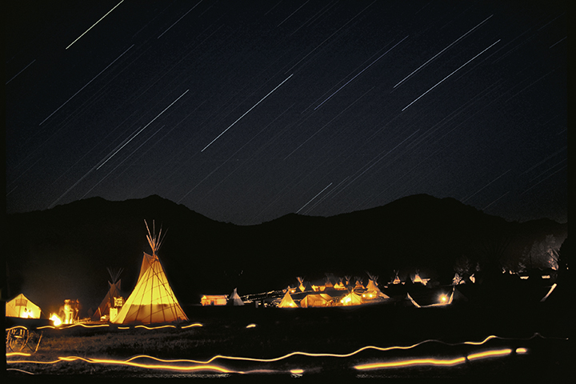
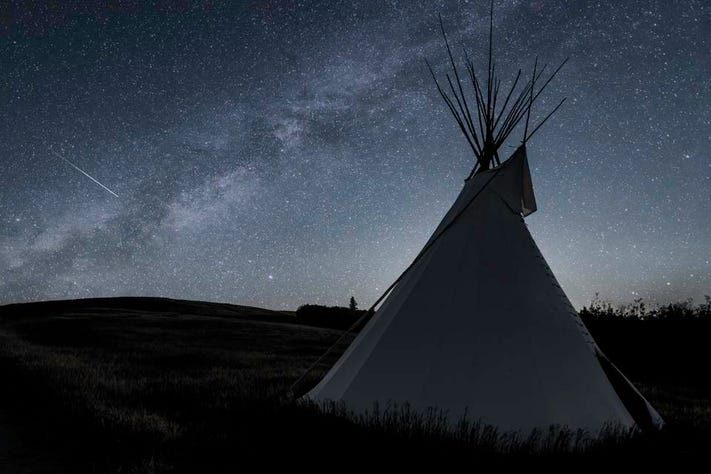

Black Powder Rendevous at night
Thunderstorms that form at night occur in the absence of heating at the ground by the sun. Consequently, the storms that form at night are usually "elevated," meaning that they form aloft above the cooler air near the ground, rather than near the ground, which only during the day can get warmer.  Stargazing the activity of looking up at the stars and objects in space as a hobby, as part of scientific study, or as part of astrology (= the belief that the position of the stars influences people's lives): The forest is far from any city lights and perfect for stargazing. 